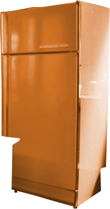
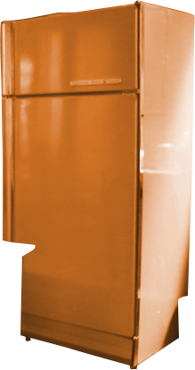
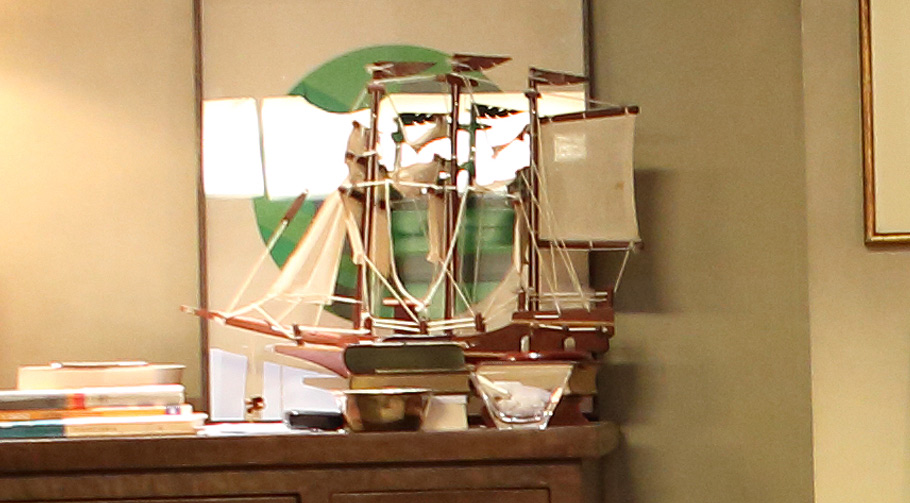
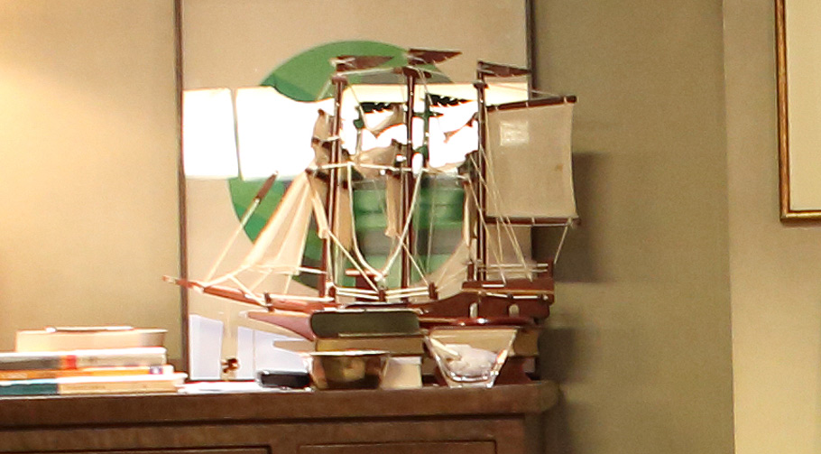
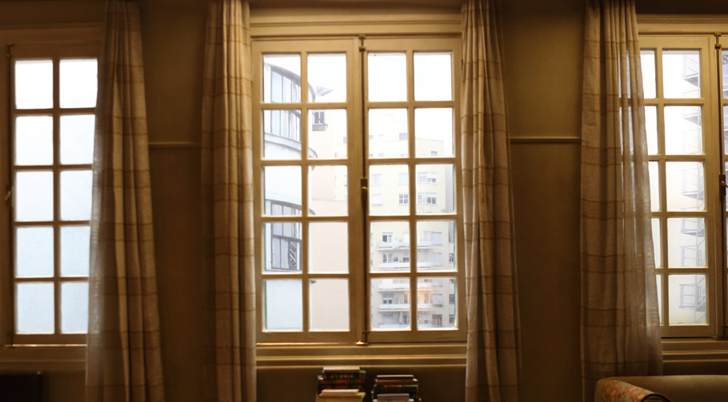
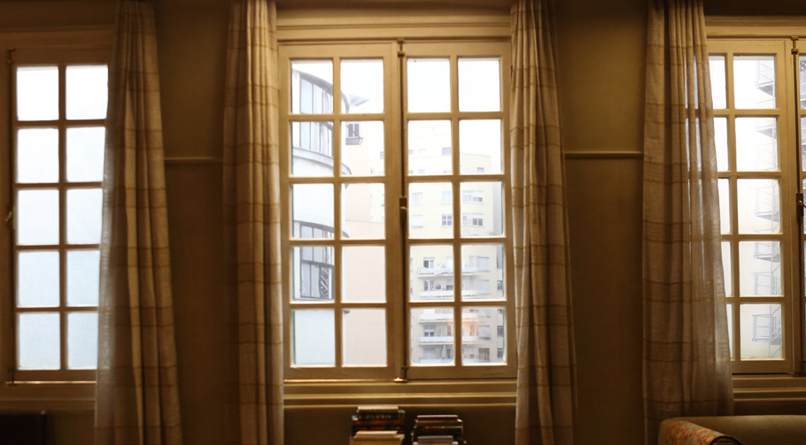
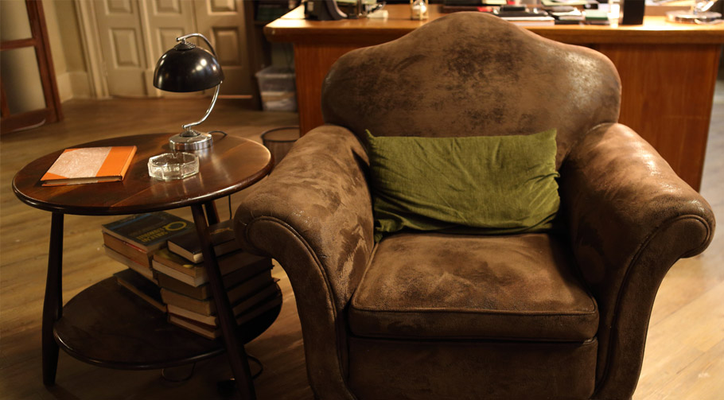
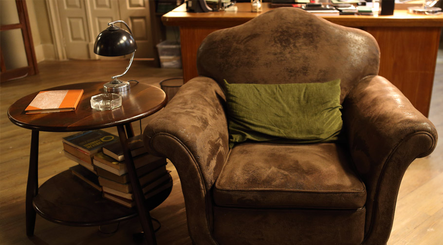

Carregando o Aplicativo
Aguarde...
Sessão de Terapia
Visite o consultório do
Theo


 


Na 2ª temporada, o Dani comoveu todo mundo ao tentar agradar os pais. A cena do Theo preparando o sanduiche para ele marcou a ligação entre os dois. Reveja o episódio no GNT Play: http://globosatplay.globo.com/gnt/v/2909276/
Quem não lembra da clássica cena em que Breno leva uma máquina de café de presente para o Theo na 1ª tmeporada? Assista à íntegra no GNT Play: http://globosatplay.globo.com/gnt/v/2184747/
 

Quem lembra da cena marcante da Nina quebrando o barco do Theo na 1ª temporada? Assista ao episódio no GNT Play: http://globosatplay.globo.com/gnt/v/2225098/

Bianca chegou com tudo na primeira sessão da 3ª temporada. Assista à íntegra do episódio: http://globosatplay.globo.com/gnt/v/3510932/
 

Theo volta de viagem na 3ª temporada, mas precisa lidar com um dos seus maiores conflitos. Confira o 1º episódio no GNT Play: http://globosatplay.globo.com/gnt/v/3510932/
Foi a sua primeira sessão do Otavio na 2ª temoprada, mas a mensagem da filha que Otavio lê para Theo mostra, desde cedo, a relação intensa e bonita que existia entre eles. Quem não se emocionou com o paciente? A íntegra do episódio você assiste aqui: http://globosatplay.globo.com/gnt/v/2842694/


Início do primeiro episódio, da primeira temporada, marcada pela declaração de Júlia a Theo. A íntegra do episódio você assiste no GNT Play: http://globosatplay.globo.com/gnt/v/2168387/
Para muitos, o momento em que Carol quebra a maquete foi muito marcante na 2ª temporada. Assista ao episódio no GNT Play: http://globosatplay.globo.com/gnt/v/2842693/
 

As sessões da Dora sempre intensas. E a relação do Theo com o pai estava sempre no centro dos diálogos. Relembre o episódio final da 2ª temporada: http://globosatplay.globo.com/gnt/v/2909284/

A morte do Breno foi marcante, principalmente para o seu pai. Quem não lembra do início da 2ª temporada com o processo que Theo sofreu? Reveja o episódio no GNT Play: http://globosatplay.globo.com/gnt/v/2842693/